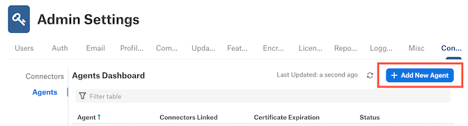
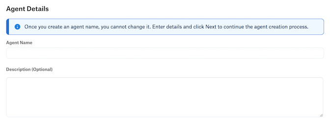

Delete and Reconnect the Agent in Alation¶
Alation Cloud Service Applies to Alation Cloud Service instances of Alation
Delete the Agent from Alation¶
You can delete an Agent from the Agents Dashboard in Alation at any time. This will have the following effects:
The Agent is removed from your Agents Dashboard in Alation.
All connectors you have installed on the Agent will be deleted from the Agent. The data sources will still appear in Alation, but the connection to your physical data source will be broken. You’ll no longer be able to use the old data source in Alation to conduct metadata extraction or other operations. If you reinstall the connector, you can add the data source to Alation again, but it will be considered a separate data source from the old one. You will have to rerun metadata extraction again on this new data source.
The certificate for the Agent is revoked. The connection is broken between your Alation Cloud instance and the Agent software installed on your network.
The Agent software remains on the host machine where you installed it (unless it has been removed or uninstalled separately). You can reconnect it later, if desired.
To delete an Agent from Alation:
In Alation, click on the Settings gear icon in the top right corner. This opens the Admin Settings page.

Under the Server Admin section, click Manage Connectors.

Click the Agents tab. The Agents Dashboard appears.
Click on the name of the Agent. The Agent’s dedicated page opens.
Click the Agent Options button, then select Delete Agent. A confirmation message appears.
Click the Confirm button to delete the Agent. A success message appears.
Click the Close button. You will be returned to the Agents Dashboard. The Agent will no longer be listed.
The Agent software that you installed on your network is unaffected by this procedure, but it will now be unable to connect to your Alation Cloud instance. To reconnect your Agent to your Alation Cloud instance, see Reconnect an Installed Agent to Alation. To uninstall the Agent from your network, see Uninstall and Reinstall the Agent Software.
Reconnect an Installed Agent to Alation¶
If you have deleted an Agent from the Agent Dashboard in Alation and the Agent software is still running on your network, you can reconnect the installed Agent to your Alation Cloud instance. Before reconnecting the Agent, check the Alation Cloud Service Compatibility to see if a newer Agent is available for your Alation Cloud version. If so, upgrade the Agent first.
Step 1: Navigate to the Agent Dashboard¶
You must have the Server Admin role in Alation to complete these steps.
In Alation, click on the Settings gear icon in the top right corner. This opens the Admin Settings page.
Under the Server Admin section, click Manage Connectors.
Click the Agents tab. The Agents Dashboard appears.
Click the Add New Agent button.
The Add New Agent dialog will appear.
Click the Next button.
Important
Do not follow the installation instructions on the Install Agent screen. You do not need to install the Agent again, because it’s already installed and running on your network.
Step 2: Name Your Agent¶
In Alation, enter a name for the Agent. This name can’t be changed, so choose carefully.
Note
The Agent’s name is used to identify connectors that you install on this Agent. When you install a new connector or add a new data source and link it to your Agent, you’ll see the Agent name added to the end of the connector name.
(Optional) Enter a description of the Agent. This appears on the Agent’s detail page. The description can’t be changed later.
Click the Next button, then confirm the name you chose.
Step 3: Generate Encryption Certificates¶
Alation uses signed certificates to encrypt the communication between Alation and the Agent.
On the Generate Certificate Signing Request (CSR) screen, copy the provided command and run it on the Agent’s host machine.
sudo kratos certs gen
Since this Agent has already been connected to your Alation Cloud instance in the past, you will get a warning that a key has already been created.
Warning! A key for this agent appears to have already been generated at "/etc/hydra/agent/security/proxy_key.pem". Generating a new key pair will destroy the existing one. Continue? [Y|n]
Enter Y to continue.
The command will generate a certificate signing request. Example output:
-----BEGIN CERTIFICATE REQUEST----- <your certificate signing request> -----END CERTIFICATE REQUEST-----
Copy the certificate signing request from the Agent machine, including the dashes.
In Alation, paste the certificate signing request into the provided box under Certificate Signing Request Output. Then click the Next button.

Alation will generate two signed certificates—one for the Agent and one root certificate. Copy the provided certificate installation command.

On the Agent’s host machine, paste the copied certificate command and run it. This installs the certificate.
Restart the Agent by copying the provided command and running it on the Agent’s host machine.
sudo systemctl restart hydra
When the Agent has finished restarting, click the Finish button in Alation. Check that your Agent has a status of Connected in the Agent Dashboard. If it doesn’t, check the Troubleshooting page.
If the installation was successful, you can now install connectors on your Agent.